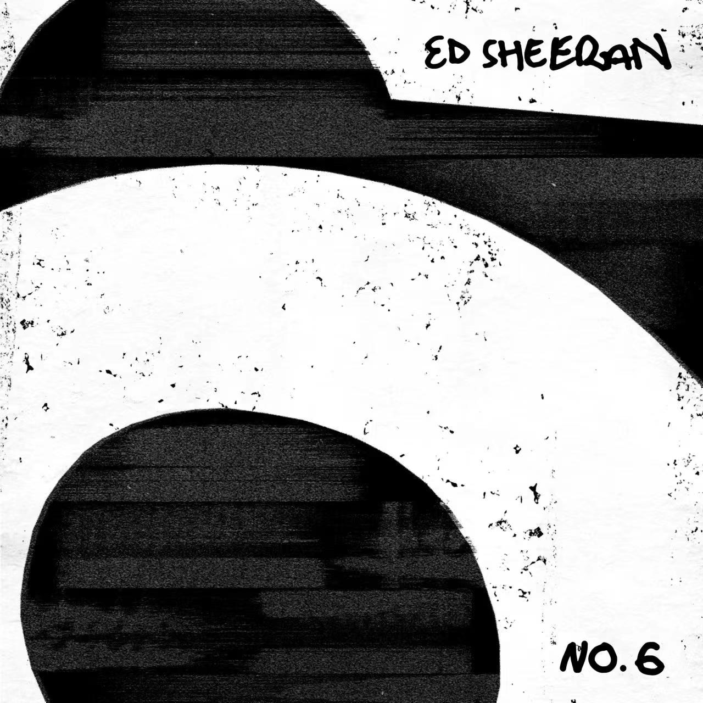
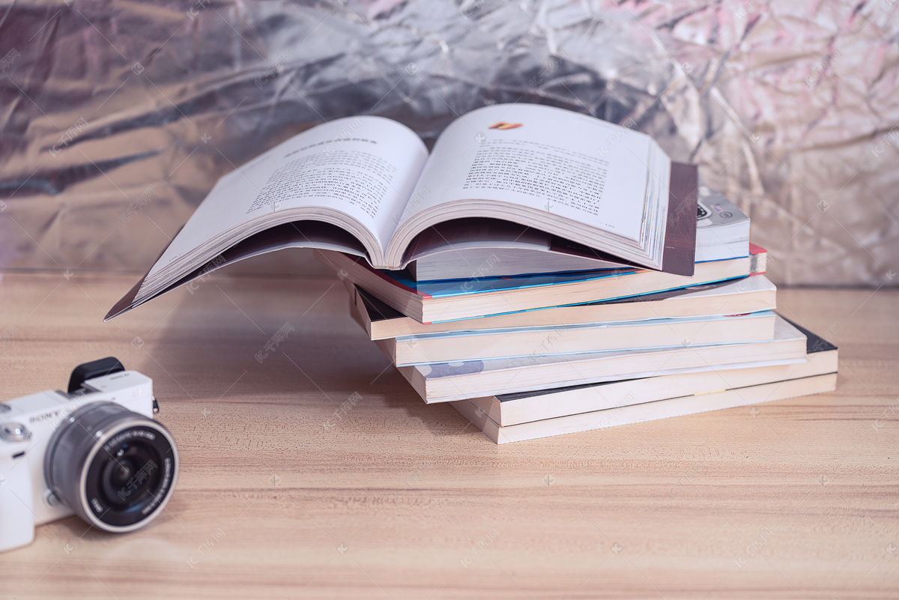
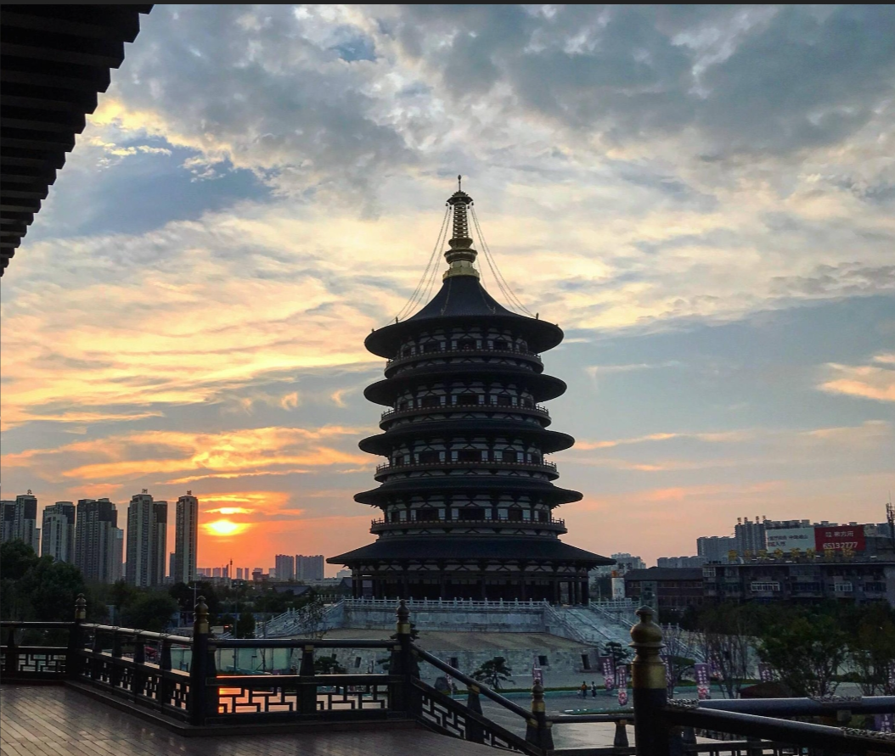
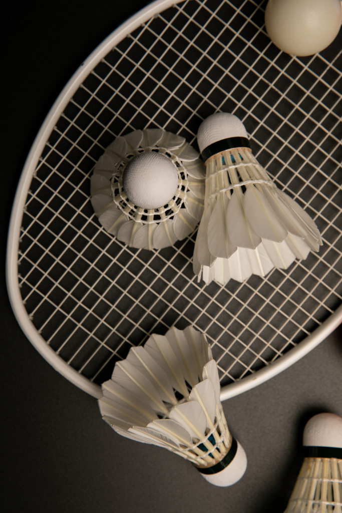

|

音乐我喜欢通过音乐使自己放松。对我来说，旋律比歌词更能吸引我，因此我喜爱的音乐类型多样。 听音乐能使我的心情保持愉悦，它们是我的精神食粮。我最近在听Nothing On You，你也可以听听看！ |

阅读阅读的时候是我最放松的时候。我喜欢徜徉在书籍中，借助文字感受人物的喜怒哀乐，在或浪漫或惊险或 悬疑的小说中体会不一样的情感。无论是网络小说还是国内外经典著作我都有所阅读，欢迎你来和我谈论你最爱的书籍！ |
|

旅游你喜欢旅游吗？每当我在其他城市旅游，享受当地的美景与风土人情，我都会心情愉悦开阔。最重要的 是，我非常乐于品尝当地特色佳肴，去大街小巷中寻觅本土小吃，品尝最地道的美食。 |

运动我最喜欢的运动是打羽毛球。在我看来，羽毛球是既休闲又有趣的一项运动，从我高中开始，我就经常和 朋友到体育馆通过打羽毛球放松身心。我享受挥拍扣球的时刻，那一瞬间的击中令我心潮澎湃。 |